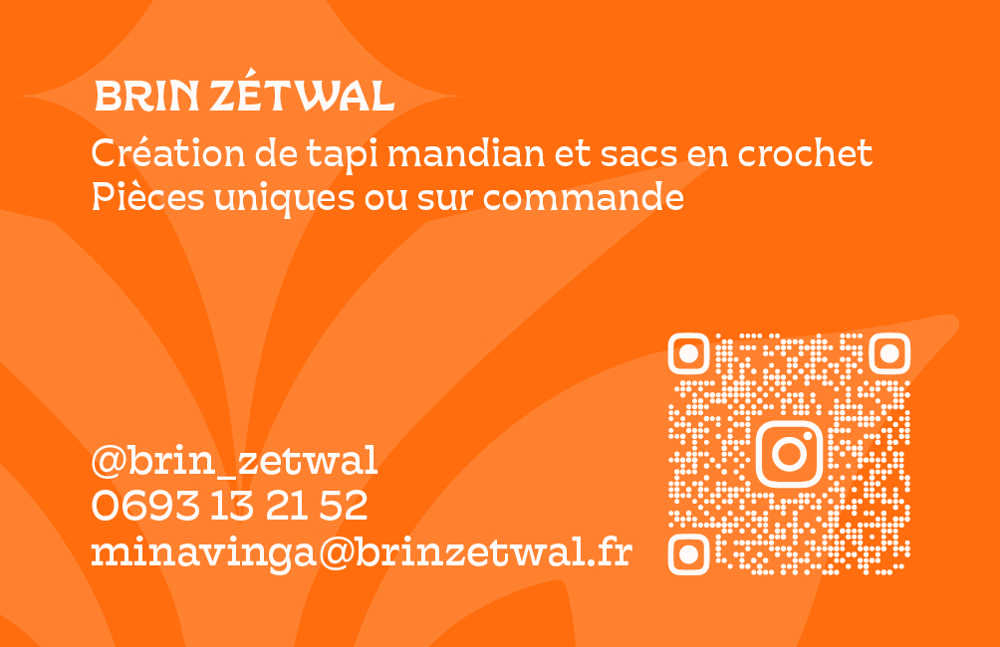
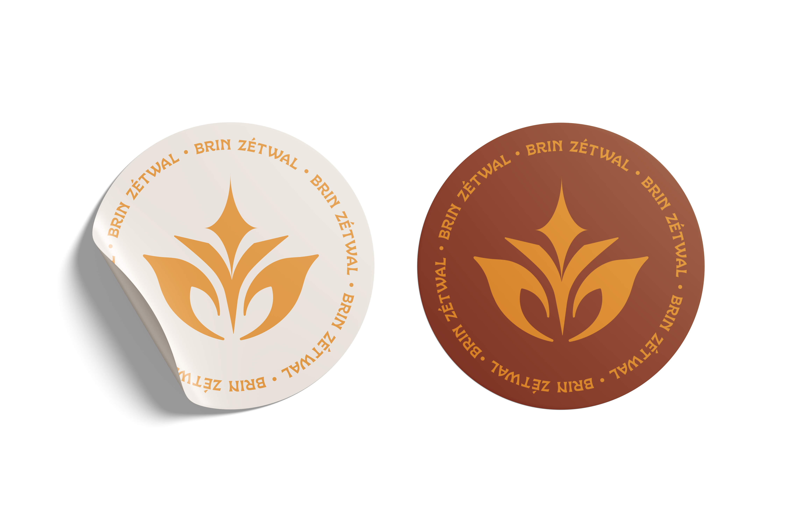
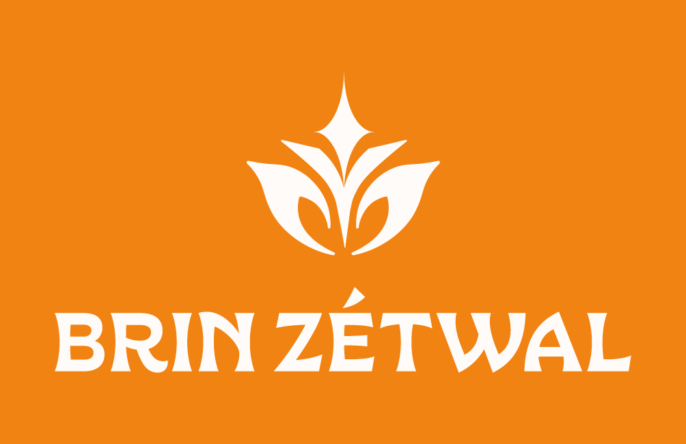

Contexte
Brin Zétwal avait besoin d’un univers suffisamment reconnaissable pour réunir ses créations artisanales, ses collections et ses ateliers, tout en conservant la dimension humaine et locale de la marque.
Une identité chaleureuse et contemporaine pour une marque réunionnaise qui mêle crochet, tapis mandian, pièces faites main et transmission des savoir-faire.

Brin Zétwal avait besoin d’un univers suffisamment reconnaissable pour réunir ses créations artisanales, ses collections et ses ateliers, tout en conservant la dimension humaine et locale de la marque.
La direction artistique s’appuie sur des formes organiques, une palette vive et chaleureuse et un langage graphique inspiré du geste. L’identité a été pensée comme un système souple, capable d’accompagner aussi bien une pièce unique qu’un atelier ou un événement.
Le système se décline sur les réseaux sociaux, les présentations de collections, les supports imprimés et la communication événementielle. Il donne à la marque une présence cohérente sans effacer le caractère artisanal de chaque création.


